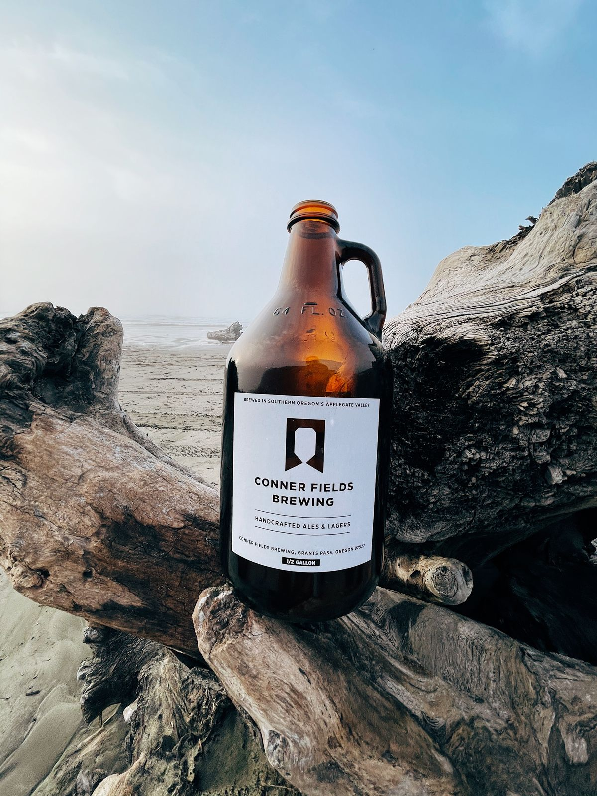

Country · Applegate Valley
Farmhouse Brewery
We're building Conner Fields Brewing the way we make everything at The Haul: by hand, from scratch. Off Kubli Road in the Applegate Valley, the heart of Southern Oregon's wine region, a production brewery and tasting room is taking shape, with outdoor dining in a peaceful country setting.
Opening 2027
What's coming
Out in the country

The brewery
Handcrafted ales and lagers brewed on site, then poured here and downtown at The Haul.
Tasting room
Pints at the source, with food from the same kitchen family that runs The Haul.
Outdoor dining
Grab a seat on the deck or spread out on the lawn under the trees. Bring the kids, bring a blanket, and stay a while.
The build
Built by the brewer
Designed, fabricated and largely built by hand. Here's where it stands.
Thirsty now? Come into town
Until the brewery opens, find us downtown at The Haul: scratch kitchen, taproom and full bar on H Street.
Go to The Haul →